Project record / 01
Lakeside Classroom
Lakeside Classroom is an outdoor learning pavilion proposed for the University of Miami campus, positioned along Lake Osceola between Lakeside Village and Eaton Residential College. Designed to accommodate approximately 16 students and an instructor, the project explores how a small architectural intervention can create a sheltered learning environment within the existing campus landscape.
The pavilion is defined by a continuous folded enclosure that forms its walls and roof. The folding geometry establishes a distinctive interior volume while providing protection from sun and rain. Openings and louvers introduce controlled daylight and maintain visual connections to the surrounding landscape.
An elevated platform responds to the site's sloping terrain and emphasizes views toward Lake Osceola. Together, the enclosure, platform, and orientation establish a relationship between the learning environment and its immediate surroundings.
Architectural Documentation
Select an image to enlarge
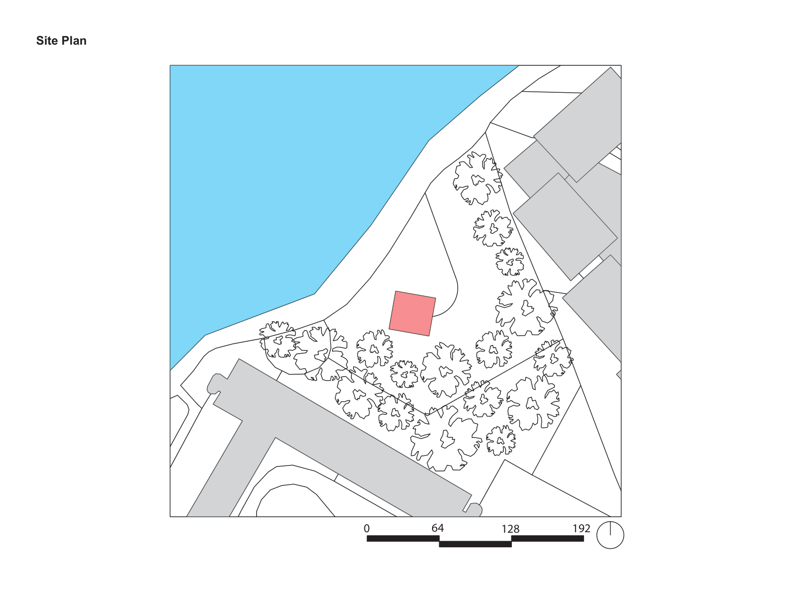

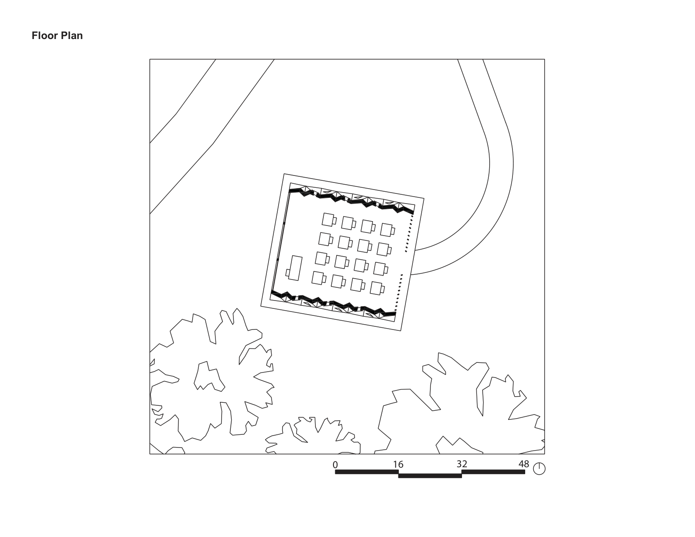

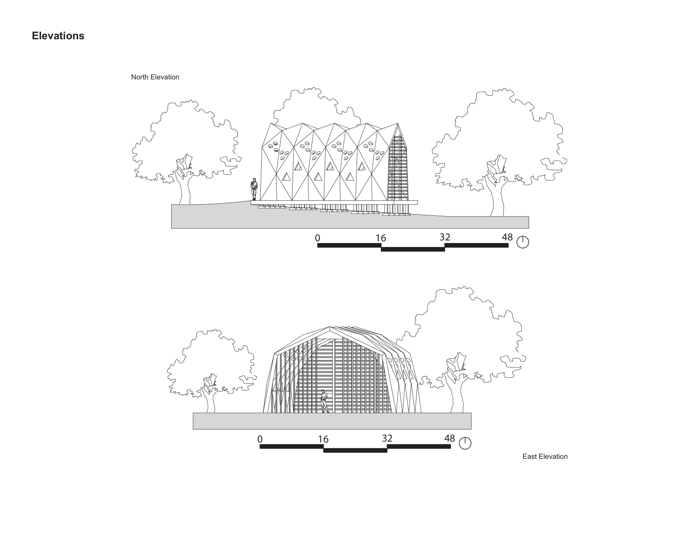

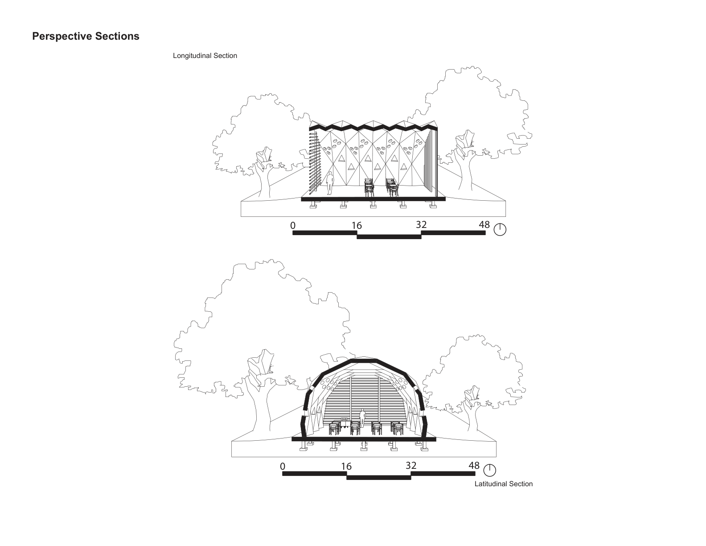

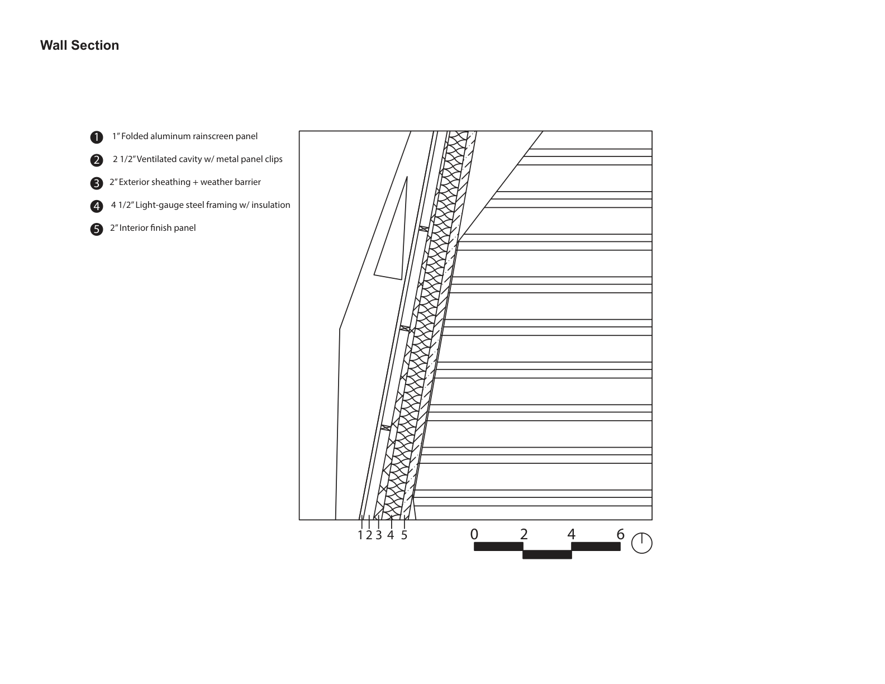

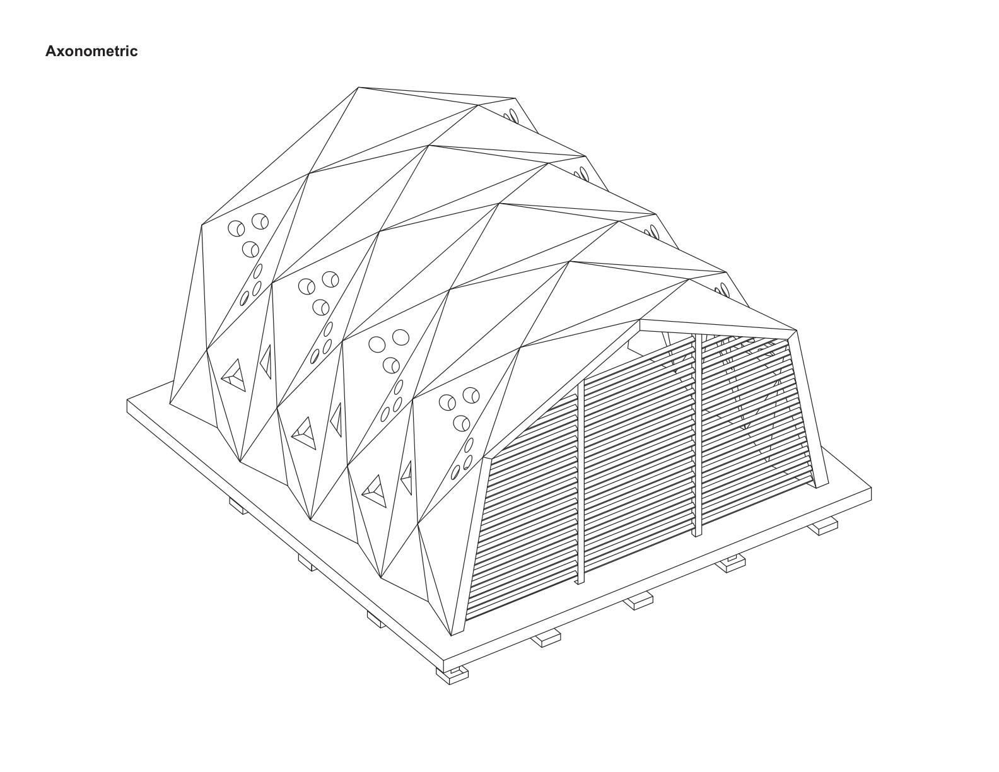
Visualizations
Select an image to enlarge
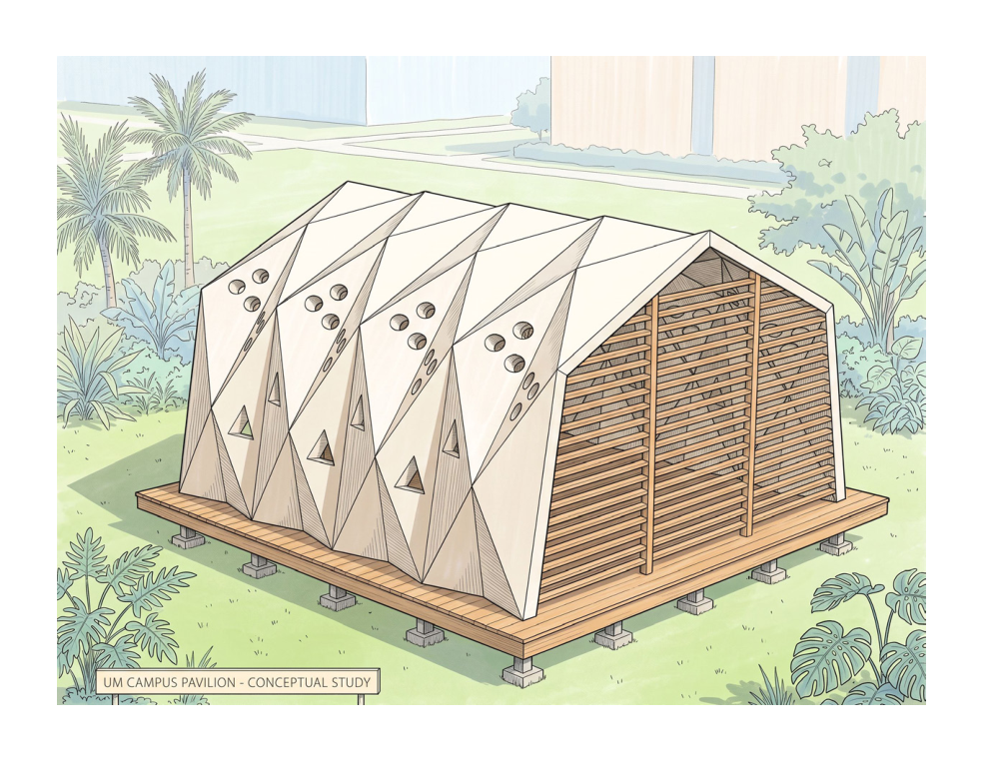

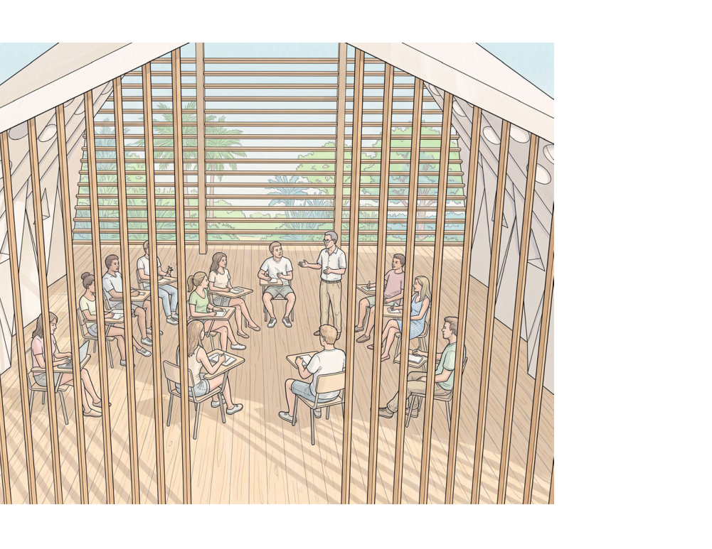

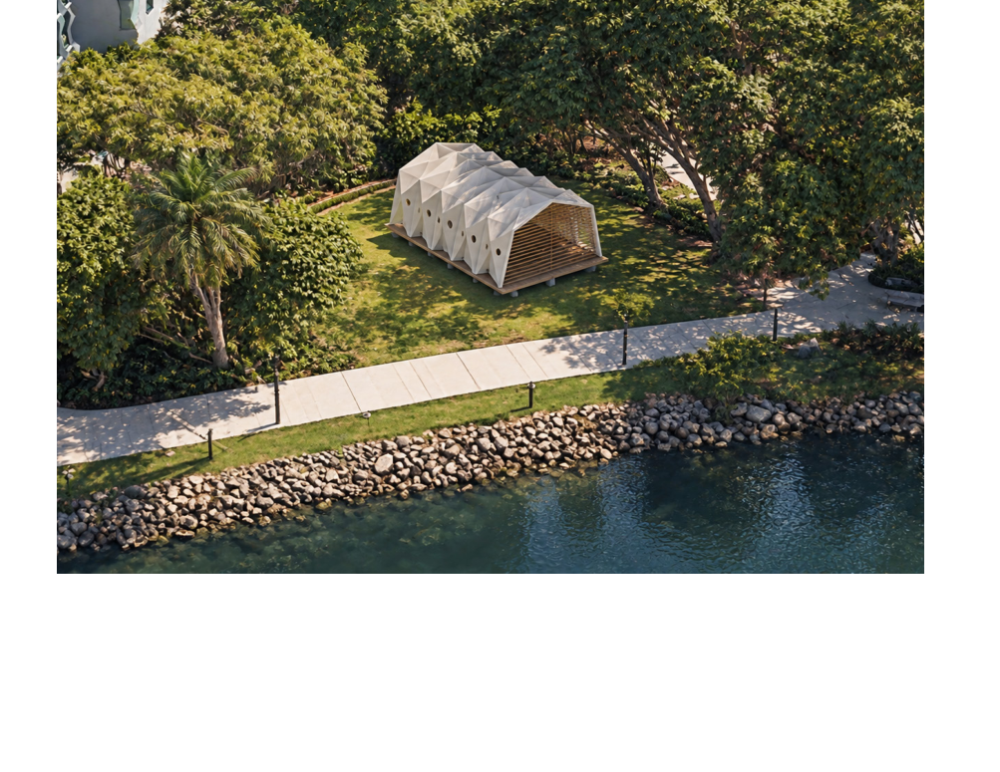

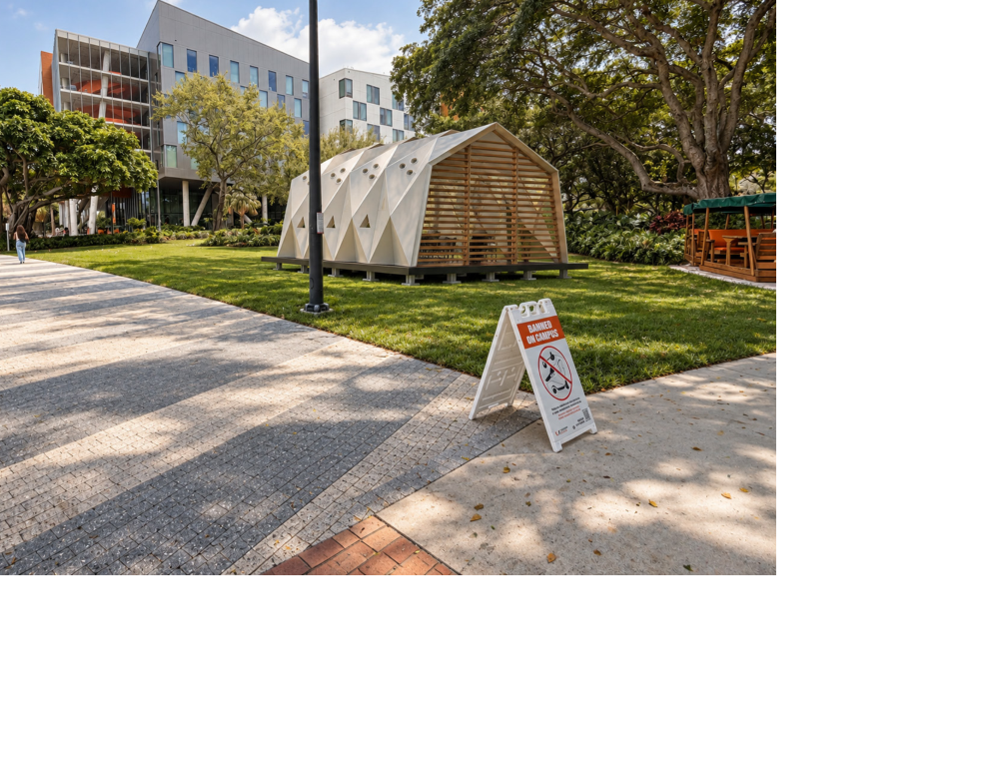
Design Process
Select an image to enlarge
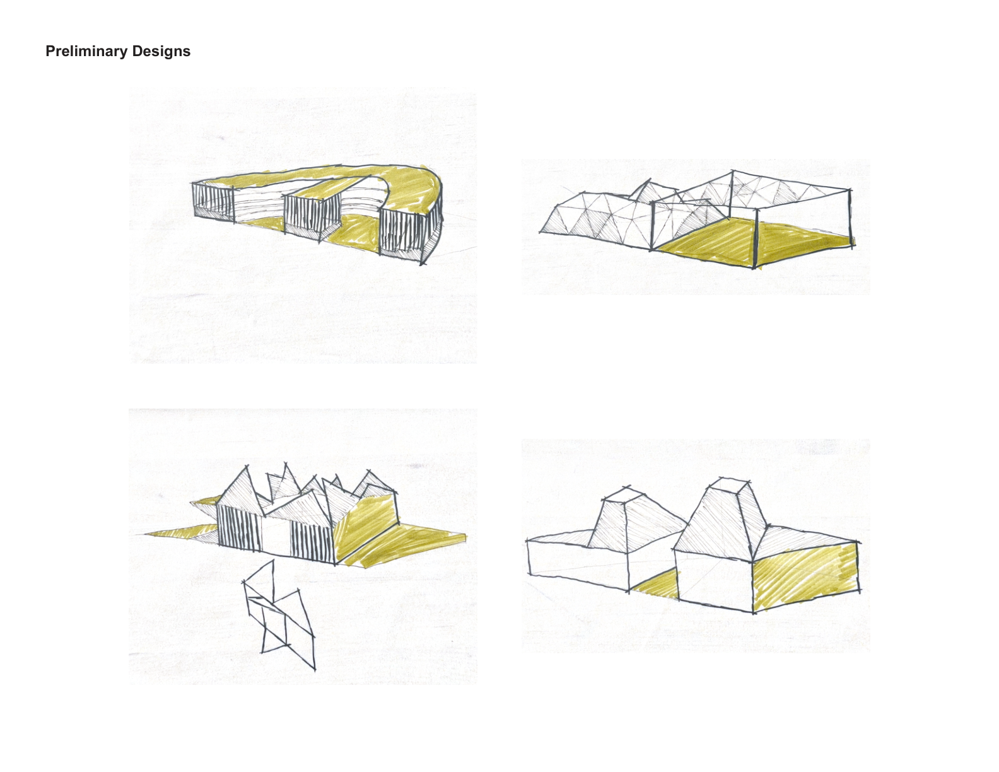

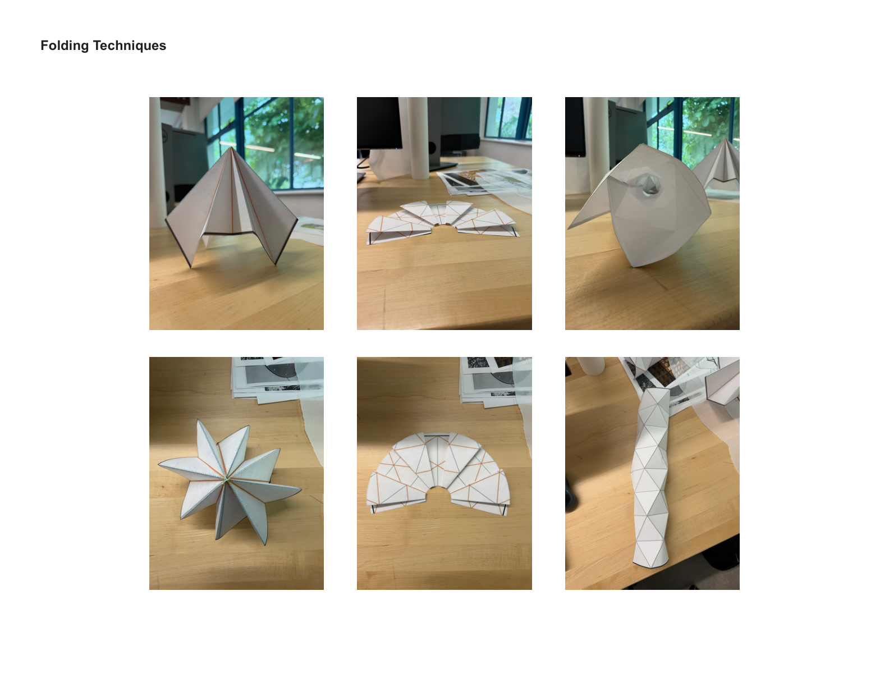

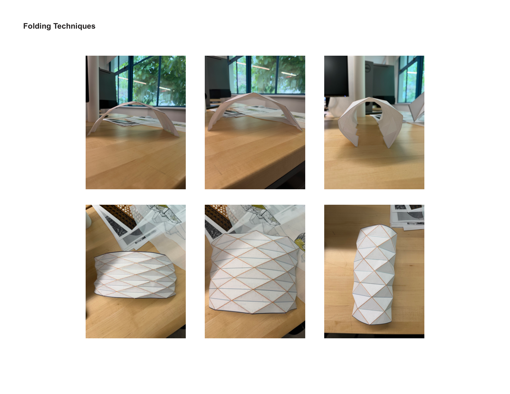